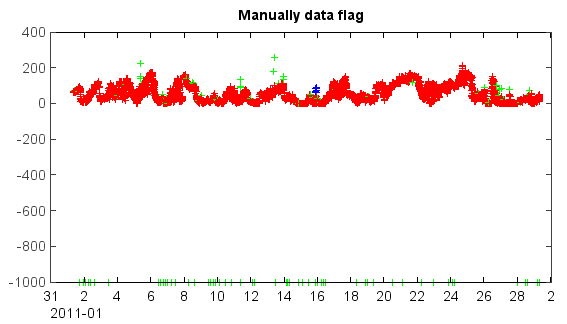

Manually outlier flag¶
A flag chart form can be openned using flagchart() function. The data array were plotted in the
chart form and users can mannully flag mouse selected data points.
#Read data
fn = r'D:\MyProgram\Distribution\Java\MeteoInfo\MeteoInfo_Run\toolbox\OutlierFlag\sample\54826PMMUL201102_T.txt'
table = readtable(fn, delimiter=',', format='%{yyyyMMddHHmm}D%14i%11f%i%f%i%4f%i%3f')
pm2_5 = table['PM2.5']
tt = table['BeiJing_Time']
#Set flagset and check - get flag codes
fset = qaqc.flagset(minlim=-10, maxlim=50000, errornum=11, quantilenum=21, quantil=0.9, factor=2.3, stdnum=29, stdfactor=3)
fcodes = qaqc.check_all(pm2_5, fset)
#Open a flag chart form for mannul data flagging
nfcodes = qaqc.flagchart(pm2_5, fcodes, tt, 'PM2.5')
#Plot
cols = qaqc.makecolors(nfcodes)
scatter(tt, pm2_5, s=6, edge=False, c=cols, marker='+')
xaxis(axistype='time')
The openned chart form by flagchart() function.
The manually flagged data can be saved in fcodes object which could be used to plot mannul flagged data points as blue color.
